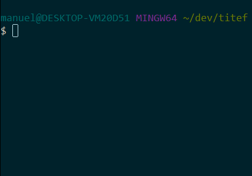

So you cannot believe how fast and light Titef can be, right?
Well, brace yourself.
DISCLAIMER
This has slightly changed since last release. The reasons behind such change are:
perf_hooksis no longer working the same in Node 10, so we adopted a version-agnostic support, usinghrtime;there was a small bug in the
Statisticsclass;
Performance test
The following test is really straightforward: without testing assertion (because both Mocha and Titef don’t have a builtin assertion library) and without testing any implementation related thing, we created a huge array and tried to filter it and sort it in the specifications of the test.
Then we measured, using process.hrtime, how log did it take
to run the whole test.
Code
This is the code of the test we ran
// Mocha, Jest, Titef
const { array } = require('./fixtures');
describe('benchmark', () => {
it('with filter', () => {
for (let i = 0; i <= 1000; i += 1) {
array.filter(j => j % 2);
}
});
it('with sort', () => {
for (let i = 0; i <= 1000; i += 1) {
array.sort();
}
});
});
// Ava
const test = require('ava');
const { array } = require('./fixtures');
test('with filter', (t) => {
for (let i = 0; i <= 1000; i += 1) {
array.filter(j => j % 2);
}
t.pass();
});
test('with sort', (t) => {
for (let i = 0; i <= 1000; i += 1) {
array.sort();
}
t.pass();
});
Script
This is the script we used to run the same test on all the frameworks
const { execSync } = require('child_process');
const { print, toMilliseconds } = require('./fixtures');
print(' Mocha');
const mochaMark = process.hrtime();
execSync('mocha -t 100000 --reporter min ./test/performance/spec.js');
print(` Duration: ${toMilliseconds(process.hrtime(mochaMark))} ms`);
print(' Jest');
const jestMark = process.hrtime();
execSync('jest --testPathPattern=performance --reporters jest-silent-reporter');
print(` Duration: ${toMilliseconds(process.hrtime(jestMark))} ms`);
print(' Ava');
const avaMark = process.hrtime();
execSync('ava ./test/performance/ava.js');
print(` Duration: ${toMilliseconds(process.hrtime(avaMark))} ms`);
print(' Titef');
const titefMark = process.hrtime();
execSync('titef ./test/performance/spec.js');
print(` Duration: ${toMilliseconds(process.hrtime(titefMark))} ms`);
Result
